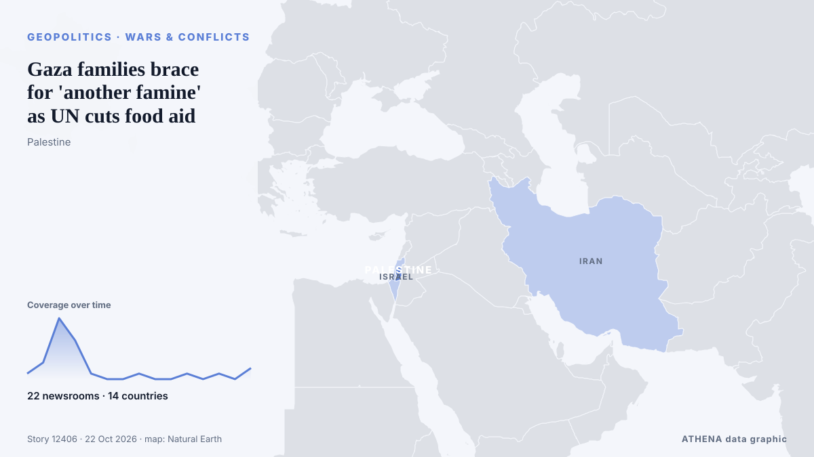

Gaza families brace for 'another famine' as UN cuts food aid

The UN's World Food Programme says 1.4 million people in Gaza are suffering acute food shortages and that funding gaps are forcing cutbacks in critical aid, despite the U.S. brokered Hamas-Israel… de NPR World
Relayé de façon indépendante par 22 médias dans 14 pays depuis le 18 oct. ; premier à l'annoncer : NPR World ; la couverture faiblit. ATHENA juge le risque accru (5.0/10), surtout en raison de la gravité des dommages décrits et de sa portée géographique et sectorielle. La confiance est de 89 % (élevée) : 22 médias indépendants le confirment, avec une fiabilité moyenne des sources de 78 %. Qui l'a rapporté : 3 médias en États-Unis · United States, 3 médias en Royaume-Uni · United Kingdom, 3 médias en Émirats arabes unis · United Arab Emirates. La couverture s'est étendue de 18 oct. à 22 oct., sur 88 heures.
Pourquoi c'est important: Ce suivi couvre le conflit qui concerne Israël, Gaza, la Cisjordanie et le Liban — faits militaires, situation humanitaire et diplomatie — tel que le couvre la presse du monde entier.
Ce qui a changé : 3 nouveaux articles de 3 rédactions dans les 24 heures jusqu'au 22 oct..
Les titres sont affichés en anglais, tels que publiés.
En un coup d'œil
Sélectionné, noté et rédigé par la méthodologie publiée d'ATHENA. Aucun rédacteur n'intervient sur un événement en particulier. Comment il est produit ›
| 18 Oct 21:00 UTC | 1 |
|---|---|
| 19 Oct 03:00 UTC | 3 |
| 19 Oct 09:00 UTC | 11 |
| 19 Oct 15:00 UTC | 7 |
| 19 Oct 21:00 UTC | 1 |
| 20 Oct 03:00 UTC | 0 |
| 20 Oct 09:00 UTC | 0 |
| 20 Oct 15:00 UTC | 1 |
| 20 Oct 21:00 UTC | 0 |
| 21 Oct 03:00 UTC | 0 |
| 21 Oct 09:00 UTC | 1 |
| 21 Oct 15:00 UTC | 0 |
| 21 Oct 21:00 UTC | 1 |
| 22 Oct 03:00 UTC | 0 |
| 22 Oct 09:00 UTC | 2 |
| 19 Oct 15:50 UTC | 4.5 |
|---|---|
| 19 Oct 18:57 UTC | 4.9 |
| 22 Oct 12:54 UTC | 5.0 |
Pourquoi ces chiffres
Importance
Risque
Confiance
La couverture : qui l'a annoncé, et quand
titre tel que publié · ouvre l'original- NPR World · États-Unis · United States'Life is absolutely brutal in Gaza,' says World Food Programme head
- BBC News · Royaume-Uni · United KingdomFunding shortages force World Food Programme to cut aid to Gaza
- The Straits Times · Singapour · SingaporeWorld Food Programme cuts aid to 500,000 Palestinians in Gaza, cites funding shortages
- Al-Monitor · États-Unis · United StatesUN agency slashes Gaza food 'lifeline' over funding shortfall
- Mehr News (English) · Iran1.4 million Palestinians still acutely food insecure in Gaza
- The Guardian · Royaume-Uni · United KingdomCuts force World Food Programme to end support for half a million Palestinians in Gaza
- Business Recorder · PakistanWorld Food Programme says ending aid for half million in Gaza due to funding shortfall
- Middle East Eye · INTWFP ending aid for half million in Gaza due to funding shortfall
- DW English · Allemagne · GermanyUN food program cuts aid to 500,000 Palestinians in Gaza
- Middle East Eye · INTWorld Food Programme stops provision to half a million people in Gaza over lack of funding
- Middle East Eye · INTWorld Food Programme stops provision to half a million people in Gaza over lack of funding
- UN News · États-Unis · United StatesGaza: Funding cuts leave half a million without food assistance
- Oman Observer · OmanWFP cuts aid to 500,000 Palestinians in Gaza
- Sky News (World) · Royaume-Uni · United KingdomUN cuts food aid to half a million Gazans over funding shortages
- Euronews English · FranceUN food agency to cut aid to 500,000 people in Gaza as funding dries up
- Al Jazeera English · QatarFamine fears as aid cuts and shipment restrictions coincide in Gaza
- RTÉ News · Irlande · IrelandWFP to cut Gaza aid for 500,000 amid funding crisis
- Al Jazeera English · QatarGaza faces worsening hunger as WFP announces food aid cuts
- Shafaq News (English) · Irak · IraqIsraeli attacks kill two, wound others across Gaza
- The National · Émirats arabes unis · United Arab EmiratesWorld Food Programme to cut aid to half a million people in Gaza amid funding shortfall
- Taipei Times · Taïwan · TaiwanWFP cuts aid to 500,000 Palestinians as funds shrink
- The Daily Star — page reader · BangladeshFunding crisis: WFP cuts food aid to 500,000 in Gaza
- The New Arab · INTWorld Food Programme cuts aid to 500,000 Palestinians in Gaza
- The National · Émirats arabes unis · United Arab EmiratesGaza families fear losing their last lifeline after WFP aid cuts
- The New Arab · INTFamilies in Gaza fear return to hunger as WFP slashes food aid
- The National · Émirats arabes unis · United Arab EmiratesIsrael cannot secure lasting peace while Gaza remains in crisis
- Middle East Eye · INTGaza families brace for 'another famine' as UN cuts food aid
- Africanews (English) · AFRAs food assistance wanes, Palestinians face the prospect of hunger